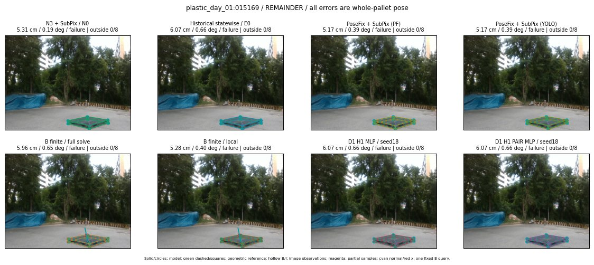

Whole-pallet pose errors; reference is a fixed geometric annotation, not certified physical GT.

Scores are uncalibrated logits. N0 retention is a numerical pose alias; it differs from H0 none or B fallback. B/I and profiles in baseline/B panels are original observations; L panels use new D1 observations. Only one deterministic supported B query is shown in a thumbnail; full support counts are below. Grey privacy rectangles edit the display copy only and are unrelated to O states; all observations were measured on original pixels. Thumbnails use JPEG quality85; detailed scientific panels are PNG.
| Method | Whole pose / cm, deg | Actual source | Selected ID | Score | Archived candidates | Eligible | N0 retained | H0 none | Fallback | Finite profiles |
|---|---|---|---|---|---|---|---|---|---|---|
| Raw YOLO + F | 20.05 cm / 0.58 deg / failure | OTHER | None | N/A | N/A | N/A | False | N/A | None | N/A |
| N3 + SubPix / N0 | 5.31 cm / 0.19 deg / failure | N0 | None | N/A | N/A | N/A | True | N/A | None | N/A |
| Historical statewise / E0 | 6.07 cm / 0.66 deg / failure | E0_REGENERATED | None | N/A | N/A | N/A | False | N/A | False | N/A |
| PoseFix raw | 17.34 cm / 0.90 deg / failure | OTHER | None | N/A | N/A | N/A | False | N/A | None | N/A |
| PoseFix + SubPix (PF) | 5.17 cm / 0.39 deg / failure | OTHER | None | N/A | N/A | N/A | False | N/A | False | historical support records 9; finite audit N/A |
| PoseFix + SubPix (YOLO) | 5.17 cm / 0.39 deg / failure | OTHER | None | N/A | N/A | N/A | False | N/A | False | historical support records 9; finite audit N/A |
| Historical L, seed18 | 5.31 cm / 0.19 deg / failure | N0 | N0 | N/A | 47 | 47 | True | True | True | N/A |
| Historical B fixed bank | 6.07 cm / 0.66 deg / failure | E0_REGENERATED | G10/ORIGINAL_WD/sample/0 | N/A | N/A | N/A | False | N/A | False | N/A |
| Historical B full | 6.00 cm / 0.75 deg / failure | OTHER | NEW/B/ORIGINAL_WD/h0/G10/ORIGINAL_WD/sample/0/PROPOSED_NATIVE_YAW_0 | N/A | N/A | N/A | False | N/A | False | N/A |
| Historical edge full | 5.68 cm / 83.64 deg / failure | OTHER | NEW/edge/SWAPPED_WD/h0/G10/SWAPPED_WD/sample/0/PROPOSED_NATIVE_YAW_0 | N/A | N/A | N/A | False | N/A | False | N/A |
| Historical AB full | 6.00 cm / 0.75 deg / failure | OTHER | NEW/AB/ORIGINAL_WD/h0/G10/ORIGINAL_WD/sample/0/PROPOSED_NATIVE_YAW_0 | N/A | N/A | N/A | False | N/A | False | N/A |
| B finite / fixed bank | 6.07 cm / 0.66 deg / failure | E0_REGENERATED | G10/ORIGINAL_WD/sample/0 | N/A | N/A | N/A | False | N/A | False | 12/12 |
| B finite / full solve | 5.96 cm / 0.65 deg / failure | OTHER | NEW_FINITE/B/ORIGINAL_WD/h0/G10/ORIGINAL_WD/sample/0/PROPOSED_NATIVE_YAW_0 | N/A | N/A | N/A | False | N/A | False | 12/12 |
| B finite / local | 5.28 cm / 0.40 deg / failure | OTHER | NEW_FINITE/B/ORIGINAL_WD/h0/N0_LOCAL_SAME_PHYSICAL_POSE/ORIGINAL_WD | N/A | N/A | N/A | False | N/A | False | 12/12 |
| Edge finite / full solve | 6.18 cm / 0.65 deg / failure | OTHER | NEW_FINITE/edge/ORIGINAL_WD/h0/G10/ORIGINAL_WD/sample/0/PROPOSED_NATIVE_YAW_0 | N/A | N/A | N/A | False | N/A | False | 12/12 |
| D0 H0 MLP / seed18 | 5.31 cm / 0.19 deg / failure | N0 | N0 | 2.5760161876678467 | 14 | 14 | True | True | True | N/A |
| D0 H0 MLP / seed19 | 5.31 cm / 0.19 deg / failure | N0 | N0 | 4.02427864074707 | 14 | 14 | True | True | True | N/A |
| D0 H0 MLP / seed20 | 5.31 cm / 0.19 deg / failure | N0 | N0 | 1.3017148971557617 | 14 | 14 | True | True | True | N/A |
| D0 H1 MLP / seed18 | 6.07 cm / 0.66 deg / failure | E0_REGENERATED | E0_REGENERATED | -2.652238130569458 | 14 | 14 | False | False | False | N/A |
| D0 H1 MLP / seed19 | 6.07 cm / 0.66 deg / failure | E0_REGENERATED | E0_REGENERATED | -2.576627016067505 | 14 | 14 | False | False | False | N/A |
| D0 H1 MLP / seed20 | 6.07 cm / 0.66 deg / failure | E0_REGENERATED | E0_REGENERATED | -3.0505623817443848 | 14 | 14 | False | False | False | N/A |
| D1 H0 MLP / seed18 | 5.31 cm / 0.19 deg / failure | N0 | N0 | 5.737171649932861 | 14 | 14 | True | True | True | N/A |
| D1 H0 MLP / seed19 | 5.31 cm / 0.19 deg / failure | N0 | N0 | 5.99997615814209 | 14 | 14 | True | True | True | N/A |
| D1 H0 MLP / seed20 | 5.31 cm / 0.19 deg / failure | N0 | N0 | 5.190291404724121 | 14 | 14 | True | True | True | N/A |
| D1 H1 MLP / seed18 | 6.07 cm / 0.66 deg / failure | E0_REGENERATED | E0_REGENERATED | -0.03149756044149399 | 14 | 14 | False | False | False | N/A |
| D1 H1 MLP / seed19 | 6.07 cm / 0.66 deg / failure | E0_REGENERATED | E0_REGENERATED | -0.11289636790752411 | 14 | 14 | False | False | False | N/A |
| D1 H1 MLP / seed20 | 6.07 cm / 0.66 deg / failure | E0_REGENERATED | E0_REGENERATED | -0.12015044689178467 | 14 | 14 | False | False | False | N/A |
| D1 H1 ROLE AFFINE / seed18 | 6.07 cm / 0.66 deg / failure | E0_REGENERATED | E0_REGENERATED | 0.765335202217102 | 14 | 14 | False | False | False | N/A |
| D1 H1 ROLE AFFINE / seed19 | 6.07 cm / 0.66 deg / failure | E0_REGENERATED | E0_REGENERATED | 0.5092111229896545 | 14 | 14 | False | False | False | N/A |
| D1 H1 ROLE AFFINE / seed20 | 6.07 cm / 0.66 deg / failure | E0_REGENERATED | E0_REGENERATED | 0.3205187916755676 | 14 | 14 | False | False | False | N/A |
| D1 H1 PAIR MLP / seed18 | 6.07 cm / 0.66 deg / failure | E0_REGENERATED | E0_REGENERATED | 0.12229394912719727 | 14 | 2 | False | False | False | N/A |
| D1 H1 PAIR MLP / seed19 | 5.31 cm / 0.19 deg / failure | N0 | N0 | 0.14701807498931885 | 14 | 2 | True | False | False | N/A |
| D1 H1 PAIR MLP / seed20 | 5.31 cm / 0.19 deg / failure | N0 | N0 | 0.5587964057922363 | 14 | 2 | True | False | False | N/A |
| D1 H1 PAIR ROLE AFFINE / seed18 | 6.07 cm / 0.66 deg / failure | E0_REGENERATED | E0_REGENERATED | 0.6029210686683655 | 14 | 2 | False | False | False | N/A |
| D1 H1 PAIR ROLE AFFINE / seed19 | 6.07 cm / 0.66 deg / failure | E0_REGENERATED | E0_REGENERATED | 0.642124593257904 | 14 | 2 | False | False | False | N/A |
| D1 H1 PAIR ROLE AFFINE / seed20 | 6.07 cm / 0.66 deg / failure | E0_REGENERATED | E0_REGENERATED | 0.6010004281997681 | 14 | 2 | False | False | False | N/A |
| Regenerated common E0 | 6.07 cm / 0.66 deg / failure | E0_REGENERATED | E0_REGENERATED | N/A | N/A | N/A | False | N/A | False | N/A |